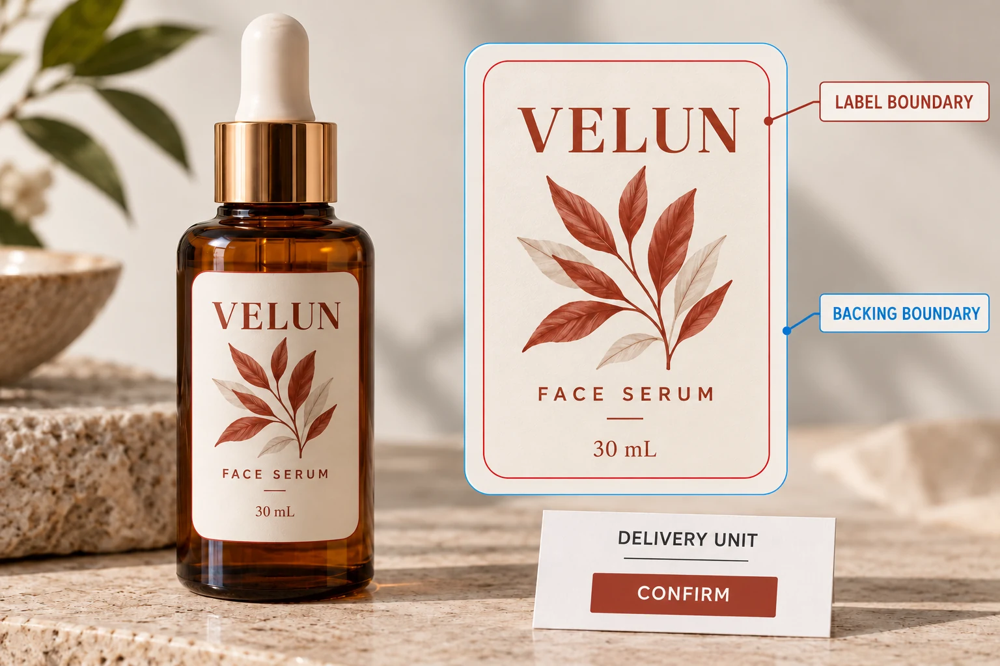

Separate the label edge from the carrier edge
The label boundary defines the part intended to remain on the bottle. The carrier or backing supports it before application. Those boundaries can differ, particularly when a shaped label stays on a larger sheet or continuous web.
Avery's sticker-cutting explanation distinguishes a shaped sticker and backing cut together from a kiss-cut sticker peeled from a carrier. Its own border detail belongs to its product offering; it is not a default allowance for a custom cosmetic label job.
Industrial label suppliers may also use die cutting to describe tooling and converting operations on rolls. Ask what the supplier will actually deliver. The useful agreement is an identified label shape on an identified carrier, not a debate over whose shorthand is correct.
Keep finished shape, artwork bleed and backing in different boxes
A designer can provide the correct finished label path while the artwork still needs background extension. The backing boundary is another question again. Do not add carrier space by enlarging the label itself.
Use the bleed, trim and safe-area guide to settle the artwork boundaries. Then add a separate delivery drawing showing how the approved label sits on its backing.
Label size should continue to reflect the usable bottle panel. Our bottle size guide covers that physical fit. A carrier margin that helps someone pick up a sample is not part of the label that wraps around the container.
Choose the handling unit around the actual application
For hand application, ask how the packer will hold the carrier and lift the label. Show any proposed edge access or grip arrangement to the supplier. The buyer should describe the task without inventing a cutting pressure, blade setting or release force.
For machine application, obtain the operator's actual web and roll requirements. A loose shaped sticker and a continuous converted web are different supplies, even if the finished label looks identical on the bottle. The backing's role continues through dispensing.
The roll-versus-sheet comparison helps choose that broader format. This article adds the boundary and carrier detail needed once the team asks for a particular shape. It does not replace the co-packer's roll specification.
Approve the supplied arrangement with a relevant sample
Request a drawing or sample that represents the proposed delivery unit. Identify the label, carrier and any cuts intended only for the backing or for separation between units. Ask the supplier to explain unfamiliar marks before the brand approves them.
Where handling or dispensing needs evaluation, use the proposed construction and arrangement. A picture of the applied bottle can show the decorative outcome while hiding every relevant carrier detail. A flat sample can clarify the cut plan without establishing performance on a particular production line.
Record what was checked. If the sample tears unexpectedly, is hard to start or behaves differently from the intended supply, identify the affected sample and ask the technical parties to investigate. Do not infer a universal construction fault from an unrecorded hand demonstration.

Put the count basis in the quotation
Specify labels per design and identify how sheets, rolls or individual pieces will be described. If a sheet carries several labels, its sheet count is not the same as its label count. If front and back components are supplied, name and count each component separately.
Ask the supplier to confirm the unit it is pricing and the agreed arrangement. A quoted custom shape does not establish whether the backing follows that shape, whether several designs share a sheet or whether the order arrives as individual pieces.
Use a concise drawing-and-quote record:
| Field | What to identify |
|---|---|
| Finished label | Approved path, dimensions, units and artwork revision |
| Backing | Carrier boundary or web arrangement, separately drawn |
| Delivery unit | Sheet, roll or individual piece, with actual proposed layout |
| Access and application | Hand task or receiving operator's confirmed requirements |
| Quantity | Labels per component and design; other unit counts clearly named |
| Sample | Representative construction, arrangement and review scope |
| Release | Responsible approver and unresolved boundary or handling issue |
This record sets no standard carrier margin or cutting tolerance. Obtain the production-specific requirements from the supplier and operator.
Two versions of the same visible label can be sensible
Consider a hypothetical team applying a small set of presentation labels by hand. A suitable sheet or larger carrier may give it a manageable supply. A loose shaped piece may also suit a different distribution task, if that is deliberately requested.
Now consider a co-packer applying the same design automatically. It needs the specified roll and web arrangement, not the hand-sample carrier chosen for a meeting. The visible label boundary can stay the same while the delivery requirement changes.
Do not use either case to claim that one cutting term always means a particular application method. Confirm the actual supplied arrangement and the job it needs to perform.
Send the carrier question with the artwork
For custom cosmetic labels, provide the container, finished label drawing, artwork and quantity by design. Add the application method and identify whether the backing boundary or delivery unit is still undecided.
Use the inquiry form to prepare the message, then send drawings and sample references through email or WhatsApp. The form does not upload attachments. Before release, make sure the printer and receiving team can point to the same label edge, carrier edge and supplied unit.